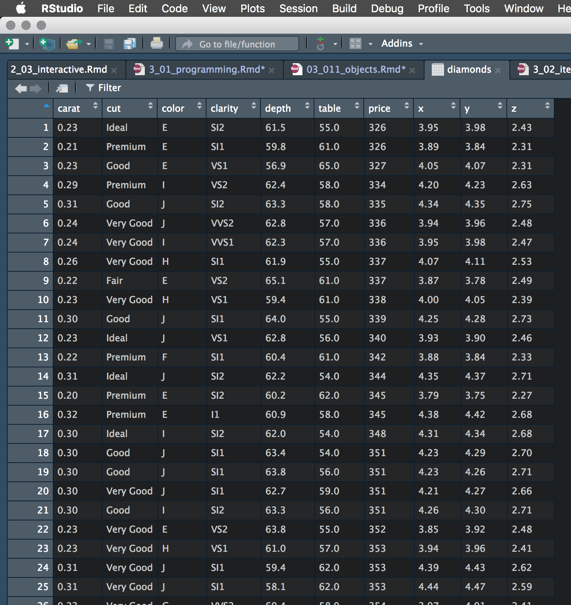
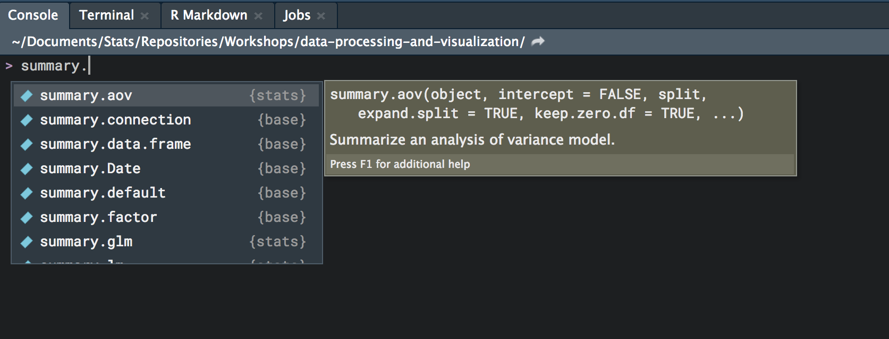

Basics
Becoming a better programmer is in many ways like learning any language. While it may be literal, there is much nuance, and many ways are available to express yourself in order to solve some problem. However, it doesn’t take much in the way of practice to develop a few skills that will not only last, but go a long way toward saving you time and allowing you to explore your data, models, and visualizations more extensively. So let’s get to it!
R Objects
Object Inspection & Exploration
Let’s say you’ve imported your data into R. If you are going to be able to do anything with it, you’ll have had to create an R object that represents that data. What is that object? By now you know it’s a data frame, specifically, an object of class data.frame or possibly a tibble if you’re working within the tidyverse. If you want to look at it, you might be tempted to look at it this way with View, or clicking on it in your Environment viewer.

While this is certainly one way to inspect it, it’s not very useful. There’s far too much information to get much out of it, and information you may need to know is absent.
Consider the following:
Classes 'tbl_df', 'tbl' and 'data.frame': 53940 obs. of 10 variables:
$ carat : num 0.23 0.21 0.23 0.29 0.31 0.24 0.24 0.26 0.22 0.23 ...
$ cut : Ord.factor w/ 5 levels "Fair"<"Good"<..: 5 4 2 4 2 3 3 3 1 3 ...
$ color : Ord.factor w/ 7 levels "D"<"E"<"F"<"G"<..: 2 2 2 6 7 7 6 5 2 5 ...
$ clarity: Ord.factor w/ 8 levels "I1"<"SI2"<"SI1"<..: 2 3 5 4 2 6 7 3 4 5 ...
$ depth : num 61.5 59.8 56.9 62.4 63.3 62.8 62.3 61.9 65.1 59.4 ...
$ table : num 55 61 65 58 58 57 57 55 61 61 ...
$ price : int 326 326 327 334 335 336 336 337 337 338 ...
$ x : num 3.95 3.89 4.05 4.2 4.34 3.94 3.95 4.07 3.87 4 ...
$ y : num 3.98 3.84 4.07 4.23 4.35 3.96 3.98 4.11 3.78 4.05 ...
$ z : num 2.43 2.31 2.31 2.63 2.75 2.48 2.47 2.53 2.49 2.39 ...Observations: 53,940
Variables: 10
$ carat <dbl> 0.23, 0.21, 0.23, 0.29, 0.31, 0.24, 0.24, 0.26, 0.22, 0.23, 0.30, 0.23, 0.22, 0.31, 0.20, 0.32, 0.30, 0.30, 0.30, 0.30, 0.30, 0.23, 0.23, 0.31, 0.31, 0.23, 0.24, 0.30, 0.23, 0.23, 0.23, 0.23, 0.23, 0.2…
$ cut <ord> Ideal, Premium, Good, Premium, Good, Very Good, Very Good, Very Good, Fair, Very Good, Good, Ideal, Premium, Ideal, Premium, Premium, Ideal, Good, Good, Very Good, Good, Very Good, Very Good, Very Good…
$ color <ord> E, E, E, I, J, J, I, H, E, H, J, J, F, J, E, E, I, J, J, J, I, E, H, J, J, G, I, J, D, F, F, F, E, E, D, F, E, H, D, I, I, J, D, D, H, F, H, H, E, H, F, G, I, E, D, I, J, I, I, I, I, D, D, D, I, G, I, …
$ clarity <ord> SI2, SI1, VS1, VS2, SI2, VVS2, VVS1, SI1, VS2, VS1, SI1, VS1, SI1, SI2, SI2, I1, SI2, SI1, SI1, SI1, SI2, VS2, VS1, SI1, SI1, VVS2, VS1, VS2, VS2, VS1, VS1, VS1, VS1, VS1, VS1, VS1, VS1, SI1, VS2, SI2,…
$ depth <dbl> 61.5, 59.8, 56.9, 62.4, 63.3, 62.8, 62.3, 61.9, 65.1, 59.4, 64.0, 62.8, 60.4, 62.2, 60.2, 60.9, 62.0, 63.4, 63.8, 62.7, 63.3, 63.8, 61.0, 59.4, 58.1, 60.4, 62.5, 62.2, 60.5, 60.9, 60.0, 59.8, 60.7, 59.…
$ table <dbl> 55.0, 61.0, 65.0, 58.0, 58.0, 57.0, 57.0, 55.0, 61.0, 61.0, 55.0, 56.0, 61.0, 54.0, 62.0, 58.0, 54.0, 54.0, 56.0, 59.0, 56.0, 55.0, 57.0, 62.0, 62.0, 58.0, 57.0, 57.0, 61.0, 57.0, 57.0, 57.0, 59.0, 58.…
$ price <int> 326, 326, 327, 334, 335, 336, 336, 337, 337, 338, 339, 340, 342, 344, 345, 345, 348, 351, 351, 351, 351, 352, 353, 353, 353, 354, 355, 357, 357, 357, 402, 402, 402, 402, 402, 402, 402, 402, 403, 403, 4…
$ x <dbl> 3.95, 3.89, 4.05, 4.20, 4.34, 3.94, 3.95, 4.07, 3.87, 4.00, 4.25, 3.93, 3.88, 4.35, 3.79, 4.38, 4.31, 4.23, 4.23, 4.21, 4.26, 3.85, 3.94, 4.39, 4.44, 3.97, 3.97, 4.28, 3.96, 3.96, 4.00, 4.04, 3.97, 4.0…
$ y <dbl> 3.98, 3.84, 4.07, 4.23, 4.35, 3.96, 3.98, 4.11, 3.78, 4.05, 4.28, 3.90, 3.84, 4.37, 3.75, 4.42, 4.34, 4.29, 4.26, 4.27, 4.30, 3.92, 3.96, 4.43, 4.47, 4.01, 3.94, 4.30, 3.97, 3.99, 4.03, 4.06, 4.01, 4.0…
$ z <dbl> 2.43, 2.31, 2.31, 2.63, 2.75, 2.48, 2.47, 2.53, 2.49, 2.39, 2.73, 2.46, 2.33, 2.71, 2.27, 2.68, 2.68, 2.70, 2.71, 2.66, 2.71, 2.48, 2.41, 2.62, 2.59, 2.41, 2.47, 2.67, 2.40, 2.42, 2.41, 2.42, 2.42, 2.4…The str function looks at the structure of the object, while glimpse perhaps provides a possibly more readable version, and is just str specifically suited toward data frames. In both cases, we get info about the object and the various things within it.
While you might be doing this with data frames, you should be doing it with any of the objects you’re interested in. Consider a regression model object.
List of 12
- attr(*, "class")= chr "lm"List of 12
$ coefficients : Named num [1:11] 12.3034 -0.1114 0.0133 -0.0215 0.7871 ...
..- attr(*, "names")= chr [1:11] "(Intercept)" "cyl" "disp" "hp" ...
$ residuals : Named num [1:32] -1.6 -1.112 -3.451 0.163 1.007 ...
..- attr(*, "names")= chr [1:32] "Mazda RX4" "Mazda RX4 Wag" "Datsun 710" "Hornet 4 Drive" ...
$ effects : Named num [1:32] -113.65 -28.6 6.13 -3.06 -4.06 ...
..- attr(*, "names")= chr [1:32] "(Intercept)" "cyl" "disp" "hp" ...
$ rank : int 11
$ fitted.values: Named num [1:32] 22.6 22.1 26.3 21.2 17.7 ...
..- attr(*, "names")= chr [1:32] "Mazda RX4" "Mazda RX4 Wag" "Datsun 710" "Hornet 4 Drive" ...
$ assign : int [1:11] 0 1 2 3 4 5 6 7 8 9 ...
$ qr :List of 5
..- attr(*, "class")= chr "qr"
$ df.residual : int 21
$ xlevels : Named list()
$ call : language lm(formula = mpg ~ ., data = mtcars)
$ terms :Classes 'terms', 'formula' language mpg ~ cyl + disp + hp + drat + wt + qsec + vs + am + gear + carb
.. ..- attr(*, "variables")= language list(mpg, cyl, disp, hp, drat, wt, qsec, vs, am, gear, carb)
.. ..- attr(*, "factors")= int [1:11, 1:10] 0 1 0 0 0 0 0 0 0 0 ...
.. .. ..- attr(*, "dimnames")=List of 2
.. ..- attr(*, "term.labels")= chr [1:10] "cyl" "disp" "hp" "drat" ...
.. ..- attr(*, "order")= int [1:10] 1 1 1 1 1 1 1 1 1 1
.. ..- attr(*, "intercept")= int 1
.. ..- attr(*, "response")= int 1
.. ..- attr(*, ".Environment")=<environment: R_GlobalEnv>
.. ..- attr(*, "predvars")= language list(mpg, cyl, disp, hp, drat, wt, qsec, vs, am, gear, carb)
.. ..- attr(*, "dataClasses")= Named chr [1:11] "numeric" "numeric" "numeric" "numeric" ...
.. .. ..- attr(*, "names")= chr [1:11] "mpg" "cyl" "disp" "hp" ...
$ model :'data.frame': 32 obs. of 11 variables:
..- attr(*, "terms")=Classes 'terms', 'formula' language mpg ~ cyl + disp + hp + drat + wt + qsec + vs + am + gear + carb
.. .. ..- attr(*, "variables")= language list(mpg, cyl, disp, hp, drat, wt, qsec, vs, am, gear, carb)
.. .. ..- attr(*, "factors")= int [1:11, 1:10] 0 1 0 0 0 0 0 0 0 0 ...
.. .. .. ..- attr(*, "dimnames")=List of 2
.. .. ..- attr(*, "term.labels")= chr [1:10] "cyl" "disp" "hp" "drat" ...
.. .. ..- attr(*, "order")= int [1:10] 1 1 1 1 1 1 1 1 1 1
.. .. ..- attr(*, "intercept")= int 1
.. .. ..- attr(*, "response")= int 1
.. .. ..- attr(*, ".Environment")=<environment: R_GlobalEnv>
.. .. ..- attr(*, "predvars")= language list(mpg, cyl, disp, hp, drat, wt, qsec, vs, am, gear, carb)
.. .. ..- attr(*, "dataClasses")= Named chr [1:11] "numeric" "numeric" "numeric" "numeric" ...
.. .. .. ..- attr(*, "names")= chr [1:11] "mpg" "cyl" "disp" "hp" ...
- attr(*, "class")= chr "lm"Here we look at the object at the lowest level of detail (0), which basically just tells us that it’s a list of stuff. But if we go into more depth, we can see that there is quite a bit going on in here! Coefficients, the data frame used in the model (i.e. only the variables used and no NA), and much more are available to us, and we can pluck out any piece of it.
(Intercept) cyl disp hp drat wt qsec vs am gear carb
12.30337416 -0.11144048 0.01333524 -0.02148212 0.78711097 -3.71530393 0.82104075 0.31776281 2.52022689 0.65541302 -0.19941925 mpg cyl disp hp drat wt qsec vs am gear carb
Mazda RX4 21.0 6 160 110 3.90 2.620 16.46 0 1 4 4
Mazda RX4 Wag 21.0 6 160 110 3.90 2.875 17.02 0 1 4 4
Datsun 710 22.8 4 108 93 3.85 2.320 18.61 1 1 4 1
Hornet 4 Drive 21.4 6 258 110 3.08 3.215 19.44 1 0 3 1
Hornet Sportabout 18.7 8 360 175 3.15 3.440 17.02 0 0 3 2
Valiant 18.1 6 225 105 2.76 3.460 20.22 1 0 3 1Let’s do a summary of it, something you’ve probably done many times.
Call:
lm(formula = mpg ~ ., data = mtcars)
Residuals:
Min 1Q Median 3Q Max
-3.4506 -1.6044 -0.1196 1.2193 4.6271
Coefficients:
Estimate Std. Error t value Pr(>|t|)
(Intercept) 12.30337 18.71788 0.657 0.5181
cyl -0.11144 1.04502 -0.107 0.9161
disp 0.01334 0.01786 0.747 0.4635
hp -0.02148 0.02177 -0.987 0.3350
drat 0.78711 1.63537 0.481 0.6353
wt -3.71530 1.89441 -1.961 0.0633 .
qsec 0.82104 0.73084 1.123 0.2739
vs 0.31776 2.10451 0.151 0.8814
am 2.52023 2.05665 1.225 0.2340
gear 0.65541 1.49326 0.439 0.6652
carb -0.19942 0.82875 -0.241 0.8122
---
Signif. codes: 0 '***' 0.001 '**' 0.01 '*' 0.05 '.' 0.1 ' ' 1
Residual standard error: 2.65 on 21 degrees of freedom
Multiple R-squared: 0.869, Adjusted R-squared: 0.8066
F-statistic: 13.93 on 10 and 21 DF, p-value: 3.793e-07But you can assign that to an object and inspect it too!
List of 11
$ call : language lm(formula = mpg ~ ., data = mtcars)
$ terms :Classes 'terms', 'formula' language mpg ~ cyl + disp + hp + drat + wt + qsec + vs + am + gear + carb
.. ..- attr(*, "variables")= language list(mpg, cyl, disp, hp, drat, wt, qsec, vs, am, gear, carb)
.. ..- attr(*, "factors")= int [1:11, 1:10] 0 1 0 0 0 0 0 0 0 0 ...
.. .. ..- attr(*, "dimnames")=List of 2
.. .. .. ..$ : chr [1:11] "mpg" "cyl" "disp" "hp" ...
.. .. .. ..$ : chr [1:10] "cyl" "disp" "hp" "drat" ...
.. ..- attr(*, "term.labels")= chr [1:10] "cyl" "disp" "hp" "drat" ...
.. ..- attr(*, "order")= int [1:10] 1 1 1 1 1 1 1 1 1 1
.. ..- attr(*, "intercept")= int 1
.. ..- attr(*, "response")= int 1
.. ..- attr(*, ".Environment")=<environment: R_GlobalEnv>
.. ..- attr(*, "predvars")= language list(mpg, cyl, disp, hp, drat, wt, qsec, vs, am, gear, carb)
.. ..- attr(*, "dataClasses")= Named chr [1:11] "numeric" "numeric" "numeric" "numeric" ...
.. .. ..- attr(*, "names")= chr [1:11] "mpg" "cyl" "disp" "hp" ...
$ residuals : Named num [1:32] -1.6 -1.112 -3.451 0.163 1.007 ...
..- attr(*, "names")= chr [1:32] "Mazda RX4" "Mazda RX4 Wag" "Datsun 710" "Hornet 4 Drive" ...
$ coefficients : num [1:11, 1:4] 12.3034 -0.1114 0.0133 -0.0215 0.7871 ...
..- attr(*, "dimnames")=List of 2
.. ..$ : chr [1:11] "(Intercept)" "cyl" "disp" "hp" ...
.. ..$ : chr [1:4] "Estimate" "Std. Error" "t value" "Pr(>|t|)"
$ aliased : Named logi [1:11] FALSE FALSE FALSE FALSE FALSE FALSE ...
..- attr(*, "names")= chr [1:11] "(Intercept)" "cyl" "disp" "hp" ...
$ sigma : num 2.65
$ df : int [1:3] 11 21 11
$ r.squared : num 0.869
$ adj.r.squared: num 0.807
$ fstatistic : Named num [1:3] 13.9 10 21
..- attr(*, "names")= chr [1:3] "value" "numdf" "dendf"
$ cov.unscaled : num [1:11, 1:11] 49.883532 -1.874242 -0.000841 -0.003789 -1.842635 ...
..- attr(*, "dimnames")=List of 2
.. ..$ : chr [1:11] "(Intercept)" "cyl" "disp" "hp" ...
.. ..$ : chr [1:11] "(Intercept)" "cyl" "disp" "hp" ...
- attr(*, "class")= chr "summary.lm"If we pull the coefficients from this object, we are not just getting the values, but the table that’s printed in the summary. And we can now get that ready for publishing for example19.
| Estimate | Std. Error | t value | Pr(>|t|) | |
|---|---|---|---|---|
| (Intercept) | 12.30 | 18.72 | 0.66 | 0.52 |
| cyl | -0.11 | 1.05 | -0.11 | 0.92 |
| disp | 0.01 | 0.02 | 0.75 | 0.46 |
| hp | -0.02 | 0.02 | -0.99 | 0.33 |
| drat | 0.79 | 1.64 | 0.48 | 0.64 |
| wt | -3.72 | 1.89 | -1.96 | 0.06 |
| qsec | 0.82 | 0.73 | 1.12 | 0.27 |
| vs | 0.32 | 2.10 | 0.15 | 0.88 |
| am | 2.52 | 2.06 | 1.23 | 0.23 |
| gear | 0.66 | 1.49 | 0.44 | 0.67 |
| carb | -0.20 | 0.83 | -0.24 | 0.81 |
After a while, you’ll know what’s in the objects you use most often, and that will allow you more easily work with the content they contain, allowing you to work with them more efficiently.
Methods
Consider the following:
carat cut color clarity depth table price x y z
Min. :0.2000 Fair : 1610 D: 6775 SI1 :13065 Min. :43.00 Min. :43.00 Min. : 326 Min. : 0.000 Min. : 0.000 Min. : 0.000
1st Qu.:0.4000 Good : 4906 E: 9797 VS2 :12258 1st Qu.:61.00 1st Qu.:56.00 1st Qu.: 950 1st Qu.: 4.710 1st Qu.: 4.720 1st Qu.: 2.910
Median :0.7000 Very Good:12082 F: 9542 SI2 : 9194 Median :61.80 Median :57.00 Median : 2401 Median : 5.700 Median : 5.710 Median : 3.530
Mean :0.7979 Premium :13791 G:11292 VS1 : 8171 Mean :61.75 Mean :57.46 Mean : 3933 Mean : 5.731 Mean : 5.735 Mean : 3.539
3rd Qu.:1.0400 Ideal :21551 H: 8304 VVS2 : 5066 3rd Qu.:62.50 3rd Qu.:59.00 3rd Qu.: 5324 3rd Qu.: 6.540 3rd Qu.: 6.540 3rd Qu.: 4.040
Max. :5.0100 I: 5422 VVS1 : 3655 Max. :79.00 Max. :95.00 Max. :18823 Max. :10.740 Max. :58.900 Max. :31.800
J: 2808 (Other): 2531 I1 SI2 SI1 VS2 VS1 VVS2 VVS1 IF
741 9194 13065 12258 8171 5066 3655 1790
Call:
lm(formula = mpg ~ ., data = mtcars)
Residuals:
Min 1Q Median 3Q Max
-3.4506 -1.6044 -0.1196 1.2193 4.6271
Coefficients:
Estimate Std. Error t value Pr(>|t|)
(Intercept) 12.30337 18.71788 0.657 0.5181
cyl -0.11144 1.04502 -0.107 0.9161
disp 0.01334 0.01786 0.747 0.4635
hp -0.02148 0.02177 -0.987 0.3350
drat 0.78711 1.63537 0.481 0.6353
wt -3.71530 1.89441 -1.961 0.0633 .
qsec 0.82104 0.73084 1.123 0.2739
vs 0.31776 2.10451 0.151 0.8814
am 2.52023 2.05665 1.225 0.2340
gear 0.65541 1.49326 0.439 0.6652
carb -0.19942 0.82875 -0.241 0.8122
---
Signif. codes: 0 '***' 0.001 '**' 0.01 '*' 0.05 '.' 0.1 ' ' 1
Residual standard error: 2.65 on 21 degrees of freedom
Multiple R-squared: 0.869, Adjusted R-squared: 0.8066
F-statistic: 13.93 on 10 and 21 DF, p-value: 3.793e-07 Length Class Mode
call 3 -none- call
terms 3 terms call
residuals 32 -none- numeric
coefficients 44 -none- numeric
aliased 11 -none- logical
sigma 1 -none- numeric
df 3 -none- numeric
r.squared 1 -none- numeric
adj.r.squared 1 -none- numeric
fstatistic 3 -none- numeric
cov.unscaled 121 -none- numericHow is it that one function works on all these different types of objects? That’s not all. In RStudio, type summary. and hit the tab key.

When you load additional packages, you’ll see even more methods for the summary function. When you call summary on an object, the appropriate type of summary method will be used depending on the class of the object. If there is no specific type, e.g. when we called summary on something that already had summary called on it, it will just use a default version listing the contents. To see all the methods for summary, type the following, and you’ll see all that is currently available for your R session.
[1] summary,ANY-method summary,diagonalMatrix-method summary,mle-method summary,quantmod-method summary,sparseMatrix-method summary,stanfit-method
[7] summary.aareg* summary.agnes* summary.aov summary.aovlist* summary.areg.boot* summary.aspell*
[13] summary.bridge* summary.bridge_list* summary.brmsfit* summary.cch* summary.check_packages_in_dir* summary.clara*
[19] summary.clustCombi summary.cohesiveBlocks* summary.connection summary.corAR1* summary.corARMA* summary.corCAR1*
[25] summary.corCompSymm* summary.corExp* summary.corGaus* summary.corIdent* summary.corLin* summary.corNatural*
[31] summary.corRatio* summary.corSpher* summary.corStruct* summary.corSymm* summary.coxph* summary.coxph.penal*
[37] summary.crq summary.crqs summary.customfamily* summary.data.frame summary.Date summary.default
[43] summary.diana* summary.dissimilarity* summary.Duration* summary.dynrqs summary.ecdf* summary.factor
[49] summary.family* summary.fanny* summary.find.matches* summary.formula* summary.gam summary.ggplot*
[55] summary.glm summary.gls* summary.gmmhd summary.hcl_palettes* summary.igraph* summary.impute*
[61] summary.infl* summary.Interval* summary.List* summary.lm summary.lme* summary.lmList*
[67] summary.loess* summary.manova summary.matrix summary.mChoice* summary.Mclust summary.mclustBIC
[73] summary.MclustBootstrap summary.MclustDA summary.MclustDR summary.MclustDRsubsel summary.mclustICL summary.mcmc*
[79] summary.mcmc.list* summary.microbenchmark* summary.mixfamily* summary.mlm* summary.modelStruct* summary.mona*
[85] summary.mslm summary.multinom* summary.nlrq summary.nls* summary.nlsList* summary.nnet*
[91] summary.packageStatus* summary.pam* summary.pdBlocked* summary.pdCompSymm* summary.pdDiag* summary.pdIdent*
[97] summary.pdIdnot* summary.pdLogChol* summary.pdMat* summary.pdNatural* summary.pdSymm* summary.pdTens*
[103] summary.Period* summary.phylo* summary.phymltest* summary.POSIXct summary.POSIXlt summary.ppr*
[109] summary.prcomp* summary.princomp* summary.proc_time summary.prop.part* summary.pyears* summary.ratetable*
[115] summary.reStruct* summary.rlang_error* summary.rlang_trace* summary.rpart* summary.rq summary.rqs
[121] summary.rqss summary.shingle* summary.silhouette* summary.slm summary.srcfile summary.srcref
[127] summary.stepfun summary.stl* summary.survexp* summary.survfit* summary.survfitms* summary.survreg*
[133] summary.table summary.transcan* summary.trellis* summary.tukeysmooth* summary.varComb* summary.varConstPower*
[139] summary.varExp* summary.varFixed* summary.varFunc* summary.varIdent* summary.varPower* summary.vctrs_sclr*
[145] summary.vctrs_vctr* summary.warnings summary.yearmon* summary.yearqtr* summary.zoo*
see '?methods' for accessing help and source codeSay you are new to a modeling package, and as such, you might want to see what all you can do with the resulting object. Once you’ve discerned the class of the model object, you can then list all the functions that can be used on that object.
[1] add_criterion add_ic as.array as.data.frame as.matrix as.mcmc autocor bayes_factor bayes_R2
[10] bridge_sampler coef control_params expose_functions extract_draws family fitted fixef formula
[19] getCall hypothesis kfold launch_shinystan log_lik log_posterior logLik loo_compare loo_linpred
[28] loo_model_weights loo_predict loo_predictive_interval loo_R2 loo LOO marginal_effects marginal_smooths model_weights
[37] model.frame neff_ratio ngrps nobs nsamples nuts_params pairs parnames plot_coefficients
[46] plot post_prob posterior_average posterior_interval posterior_linpred posterior_predict posterior_samples posterior_summary pp_average
[55] pp_check pp_mixture predict predictive_error predictive_interval print prior_samples prior_summary ranef
[64] reloo residuals rhat stancode standata stanplot summary update VarCorr
[73] vcov waic WAIC
see '?methods' for accessing help and source codeThis allows you to more quickly get familiar with a package and the objects it produces, and provides utility you might not have even known to look for in the first place!
S4 classes
Everything we’ve been dealing with at this point are S3 objects, classes, and methods. R is a dialect of the S language, and the S3 name reflects the version of S at the time of R’s creation. S4 was the next iteration of S, but I’m not going to say much about the S4 system of objects other than they are a separate type of object with their own methods. For practical use you might not see much difference, but if you see an S4 object, it will have slots accessible via @.
car_matrix = mtcars %>%
as.matrix() %>% # convert from df to matrix
Matrix::Matrix() # convert to Matrix class (S4)
typeof(car_matrix)[1] "S4"Formal class 'dgeMatrix' [package "Matrix"] with 4 slots
..@ x : num [1:352] 21 21 22.8 21.4 18.7 18.1 14.3 24.4 22.8 19.2 ...
..@ Dim : int [1:2] 32 11
..@ Dimnames:List of 2
.. ..$ : chr [1:32] "Mazda RX4" "Mazda RX4 Wag" "Datsun 710" "Hornet 4 Drive" ...
.. ..$ : chr [1:11] "mpg" "cyl" "disp" "hp" ...
..@ factors : list()Usually you will access the contents via methods rather than using the @, and that assumes you know what those methods are. Mostly, I just find S4 objects slightly more annoying to work with for applied work, but you should be at least somewhat familiar with them so that you won’t be thrown off course when they appear.
Others
Indeed there are more types of R objects, but they will probably not be of much notice to the applied user. As an example, the text2vec package uses R6. I can only say that you’ll just have to cross that bridge should you get to it.
Inspecting Functions
You might not think of them as such, but in R, everything’s an object, including functions. You can inspect them like anything else.
function (formula, data, subset, weights, na.action, method = "qr", model = TRUE, x = FALSE, y = FALSE, qr = TRUE, singular.ok = TRUE, contrasts = NULL, offset, ...)
1 function (formula, data, subset, weights, na.action, method = "qr",
2 model = TRUE, x = FALSE, y = FALSE, qr = TRUE, singular.ok = TRUE,
3 contrasts = NULL, offset, ...)
4 {
5 ret.x <- x
6 ret.y <- y
7 cl <- match.call()
8 mf <- match.call(expand.dots = FALSE)
9 m <- match(c("formula", "data", "subset", "weights", "na.action",
10 "offset"), names(mf), 0L)
11 mf <- mf[c(1L, m)]
12 mf$drop.unused.levels <- TRUE
13 mf[[1L]] <- quote(stats::model.frame)
14 mf <- eval(mf, parent.frame())
15 if (method == "model.frame")
16 return(mf)
17 else if (method != "qr")
18 warning(gettextf("method = '%s' is not supported. Using 'qr'",
19 method), domain = NA)
20 mt <- attr(mf, "terms") One of the primary reasons for R’s popularity is the accessibility of the underlying code. People can very easily access the code for some function, modify it, extend it, etc. From an applied perspective, if you want to get better at writing code, or modify existing code, all you have to do is dive in! We’ll talk more about writing functions later.
Help Files
Many applied users of R are quick to search the web for available help when they come to a problem. This is great, you’ll find a lot of information out there. However, it will likely take you a bit to sort through things and find exactly what you need. Strangely, I see many users of R don’t use the help files first, and yet this is typically the quickest way to answer many of the questions they’ll have.
Let’s start with an example. We’ll use the sample function to get a random sample of 10 values from the range of numbers 1 through 5. So, go ahead and do so!
Don’t know what to put? Consult the help file!

We get a brief description of a function at the top, then we see how to actually use it, i.e. the form the syntax should take. We find out there is even an additional function, sample.int, that we could use. Next we see what arguments are possible. First we need an x, so what is the thing we’re trying to sample from? The numbers 1 through 5. Next is the size, which is how many values we want, in this case 10. So let’s try it.
Error in sample.int(length(x), size, replace, prob): cannot take a sample larger than the population when 'replace = FALSE'Uh oh- we have a problem with the replace argument! We can see in the help file that, by default, it is FALSE20, but if we want to sample 10 times from only 5 numbers, we’ll need to change it to TRUE.
Now we are on our way!
The help file gives detailed information about the sampling that is possible, which actually is not as simple as one would think! The Value is important, as it tells us what we can expect the function to return, whether a data frame, list, or whatever. We even get references, other functions that might be of interest (See Also), and examples. There is a lot to digest for this function!
Not all functions have all this information, but most do, and if they are adhering to standards they will21. However, all functions have this same documentation form, which puts R above and beyond most programming languages in this regard. Once you look at a couple of help files, you’ll always be able to quickly find the information you need from any other.
Objects Exercises
With one function, find out what the class, number of rows, number of columns are of the following object, including what kind of object the last three columns are. Inspect the help file also.